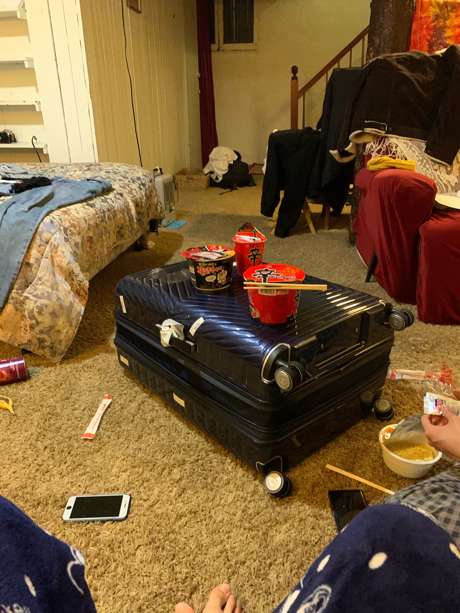
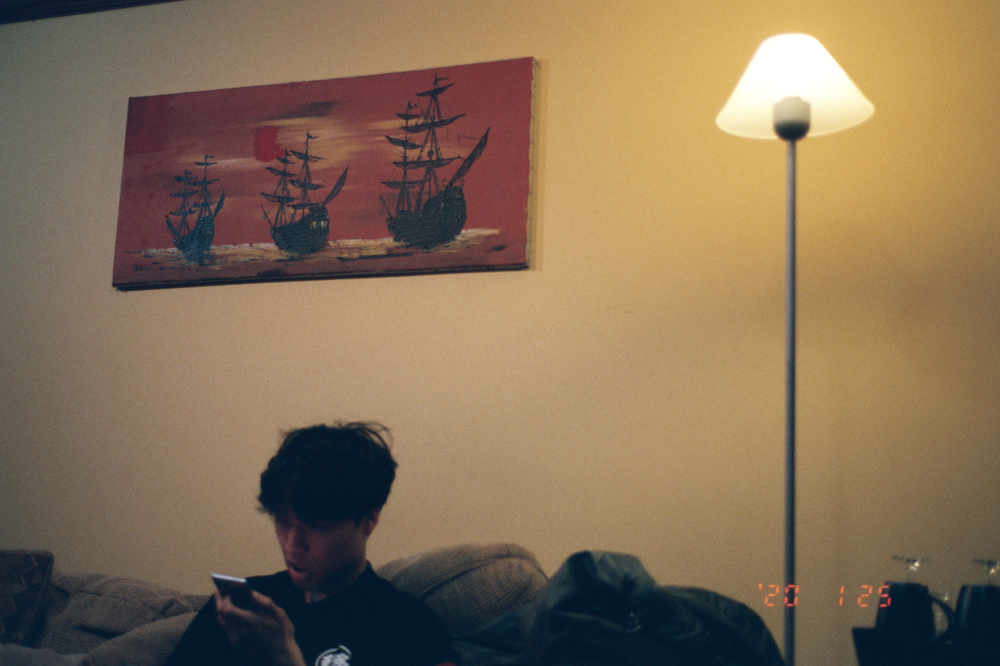
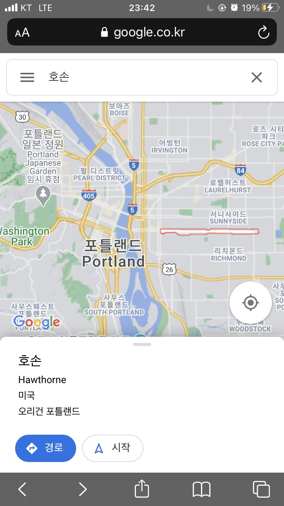
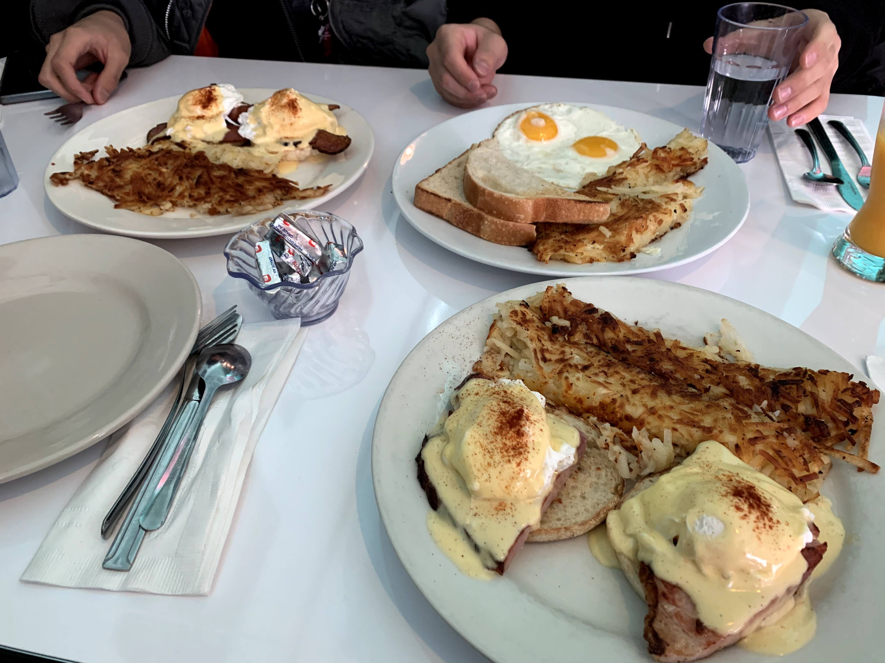

빗속의 강행군을 마친 우리는 숙소로 들어와 시답잖은 이야기를 하며
라면을 먹고 이불 쟁탈전을 치루며 잠에 들었다. 제니퍼의 지하실은
화장실도 깔끔했고 나름 있을 게 다 있었지만, 세탁기만큼은 쓰지 못하게
했다. 우리가 지금까지 묵었던 호텔들(캐리어를 펼치면 걸을 수 있는
바닥이 없어지는)에 비하면 공간이 넓은 것은 큰 장점이었다. 하지만 비가
많이 온 뒤의 지하실은 눅눅했다. 아직도 포틀랜드하면 그 눅눅한 지하실이
생각난다.

시애틀에서는 희원이와 같은 침대를 썼었는데, 포틀랜드에서는 재정이와
잤다. 재정이랑 자는 것은 정말 좋은 일이었다. 희원이가 침대의 2/3
정도를 차지하고 나면, 나는 침대가 이렇게 작았었나 하며 나의 어깨가
좁은 것에 감사하게 되는 일이 많았는데, 포틀랜드에서는 편하게 잘 수
있었다.

(지하실에서 그지같은 희원이)
시차 적응에 드디어 성공했는지, 8시 정도에 일어났다. 이 날의 메인
이벤트는 샌프란시스코로 넘어가는 것이었다. 샌프란시스코까지는 비행기를
타고 가기로 했다. 비행기 출발 시간은 16시 즈음이었다. 우리에게는
8시간의 포틀랜드가 남아있었다. 사실 난 어제의 강행군이 너무 힘들었기
때문에 포틀랜드에 대한 기대가 더 이상 남아있지 않았다. 비어 있는
시간에 여유롭게 주변을 걸어보기로 했다.

(우리가 어제 갔던 곳은 왼쪽의 다운타운이고, 오늘 간 곳은 오른 쪽의
Hawthorne이다)
지하실 계단을 올라가, 문을 열고, 물 웅덩이를 넘어 밖으로 나오자, 포틀랜드의 아침이 우리를 반겨주었다. 미국 북서부의 공기는 차가웠지만, 전날의 내린 비 때문인지, 날카롭지는 않았다. 어제 내린 비에 젖어있는 것들 위로 내리쬐는 햇빛이 모든 것을 빛나게 했다. 답답한 일상과 피곤한 출근길 위에서는 느낄 수 없는 공기와 여유가 있었다. 상쾌한 공기의 아침은 모든 것을 아름답게 만들어준다. 그러니 우리 일찍 일어나 창문을 여는 습관을 들이자. 특히 비가 온 다음 날 하늘이 맑다면.
Hawthorne까지 가는 길에 식당을 찾아 아침을 먹기로 했다. 마침 목적지와
우리 사이의 정확히 중간에 괜찮아 보이는 식당을 찾아서 그곳에서
브런치를 먹기로 했다. 식당이름은 “Jam on hawthorne"이었는데 안은
굉장히 미국스러웠다. 우리가 앉자마자 관광객이 아무도 없으며, 우리 뒤로
줄을 쭉 서는 걸 보고 성공했다고 느꼈다. 어제의 그린커리의 충격에서
벗어나지 못한 우리는 매우 신중히 메뉴를 골랐다. 하지만 다행히 이
식당은 그래도 우리가 아는 메뉴를 팔고 있었다.

음식은 성공적이었다. 포틀랜드 사람들과 섞여 맛있는 브런치를 먹으며
펼쳐질 오늘 하루에 대해 기대할 수 있다는 것이 행복했다.
우리가 가려던 Hawthorne은 빈티지 가게나 아기자기한 여러가지로 유명한
곳이었다. 하지만 일요일 아침이라 열려있는 가게가 없었다. 왠지 가는
길에 사람이 별로 없더라. 닫혀있는 가게의 유리창 너머를 궁금해하다
돌아왔다. 돌아오는 길도 너무나 아름다웠다. 미국의 주택가 감성.
지하실로 돌아와 짐을 싸고, 우버를 타고 공항으로 가면서, 포틀랜드에
대한 아쉬움을 크게 느꼈다. 아름답고 여유로운 곳인데, 아직 못 본 것도
많아 원석을 버리고 가는 느낌이 들었다. 우버 기사님은 왜인지 모르게
KFC할아버지가 생각나는 풍채에, 집에는 분명 샷건이 있을 것만 같고,
버번위스키를 좋아하시게 생기셨었다. 가는 내내 여행과 포틀랜드에 대한
대화들로 우리를 즐겁게 해주셨다. 꼭 여름에 다시 오라는 말씀을 계속
하셨던 게 기억에 남는다. 포틀랜드에서는 토요일에는 모두가 술을 마시고,
일요일에는 숙취에 찌들어 산다는 말씀이 기억에 남는다. 왠지 오늘 아침
길거리에 사람이 없더라니.
자신이 살고 있는 도시를 사랑하는 사람. 나는 그런 사람이 사는 도시에
매력을 느낀다. 도시는 도시를 사랑하는 사람으로 기억에 남곤 한다. 나와
나의 세계를 사랑하는 사람이 되었으면 한다.
공항에서는 짐을 맡기고, 비행기가 연착되고, 어디서든 잘 자는 나는 또
잤다. 공항 벤치의 옆사람은 어딘가 모르게 고등학교 동창이 떠오르는
얼굴을 한 한국인이었다. 그는 혼자 있었다. 익숙함에 끌려 말을 걸어볼까
했지만 너무 피곤해서 그만 두었다.
지연된 비행기 안은 생각보다 좁았다. 큰 땅덩어리 때문에 국내선 비행기를
많이 이용하는 미국인들에게 비행기는 마음 속 멀리 있는 거대한
기계보다는 작고 편리한 이동수단인가보다. 기내에는 드레드 머리를 한
키가 큰 흑인 스튜어드가 있었다. 이번 여행에서 가장 기억에 남는 사람을
꼽자면 아마 그 분이 될 것이다. 그는 기내의 모든 캐리어를 손쉽게 들어
캐비넷에 가볍게 넣었다. 스튜어드/스튜어디스의 업무가 객실 서비스 제공
및 안전 책임자라면 키가 큰 남성이 더욱 적합할 수 있다. 사회 여러
곳에서 직업의 목적과 본질에 맞는 채용이 이뤄졌으면 좋겠다.
이륙하는 좁은 비행기 좌석에 앉아 머리 속으로 포틀랜드를 돌아보았다. 힘들고 불만 투성이였지만, 순간 순간 빛났던 도시였다. 새삼 희원이가 고맙게 느껴졌다. 인생이란 그런 것인가를 생각하며 잠시 눈을 감았다 뜨자, 머리 위 캐비넷들이 열리기 시작했다. 우리는 이미 샌프란시스코에 도착했다.